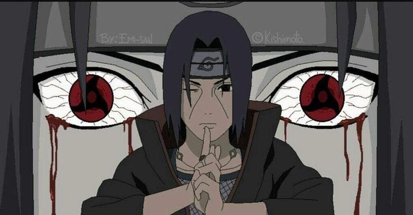

Itachi Uchiha!
We were made to fear him, not only for his skill and immense talent, but for his heartlessness.
He was a soulless villain. One loathed and feared by all.
He lived to be hated- because he simply wanted to. He was truly, veritably, evil.
Then, after all these years passed, we all learned, to our greatest shock, that the man we were told was a monster, only pretended to be so- so that the world could live peacefully.
Surprisingly, Itachi did not kill his family on a whim. He killed them to save others!
The Uchiha sought to start a war with the village. A war which would risk the lives of innocent civilians.
And, even though he stood to benefit from this war, the man just couldn't watch innocents die.
At the tender age of 14, Itachi decided to sacrifice his own brethren- his own kin- for the sake of others.
He killed off his own family, not because he wanted to, but so that others could keep theirs.
He wept as he drew the sword against his own parents, hesitant to behead the ones he loved
